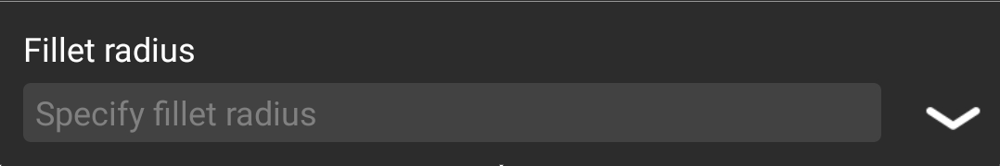

Operation steps:
Step 1: enter fillet radius in the panel;

Step 2: select the first object;
Step 3: select the second object;
Fillet Settings
Polyline:
Insert a fillet at the each vertex of 2D polyline.
Trim:
Control whether to trim the specify edges to the endpoints of arc.
Multiple:
Create fillets for multiple object sets.